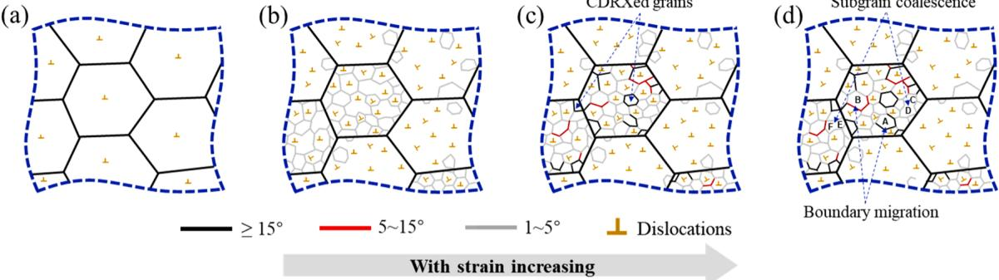
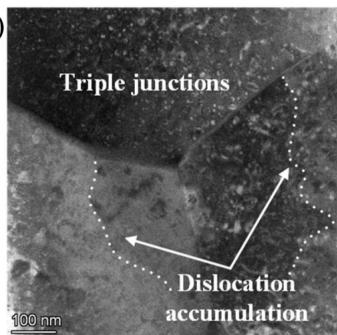
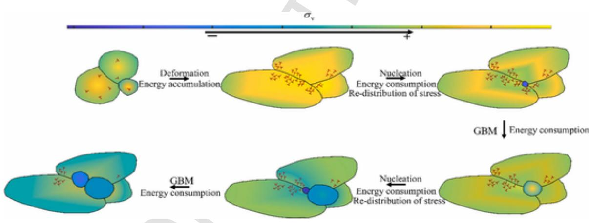

热变形条件下的晶粒细化属于结果表征，不能据此直接判定主导机制。机理分析的关键，在于识别前驱亚结构的控制方式、组织重排的主传导路径，以及宏观流动应力软化所对应的 DRV、CDRX 或 DDRX 主导转折。基于当前已读全文和 MinerU 图表锚点，本节将相关证据归并为三个层次：其一，铝合金中以亚晶旋转和低角度晶界演化为核心的 CDRX 路径；其二，应力状态驱动 GF 与 GR 竞争关系重分配的实验路径；其三，连续力学场与组织演化耦合后，DDRX 对局部应力和后续演化的反馈路径。
在 AA2196 合金的热变形场景中，Liu 等的主要贡献不在于证明“存在再结晶”，而在于明确细化过程主要经由低角度晶界的连续演化完成，而非经由独立新晶粒的瞬时形核直接实现（Liu et al., 2024（已读全文））。据此，CDRX 可以与 GF 和 DDRX 明确区分：GF 对应原始晶粒的几何切分，DDRX 对应独立形核与迁移前沿推进，而 Liu 等的主证据链则落在“位错储能累积 -> 亚晶形成 -> 取向差增大 -> 低角度晶界向高角度晶界转化 -> 晶界迁移/亚晶聚合”的连续传导路径上。其机制示意图直接给出了这一序列， 如图 1 所示。

图 1. CDRX 建模中的主要组织演化路径：初始组织、低角度晶界快速形成、取向差增加、边界迁移与亚晶聚合。
（来源：Liu et al., 2024, Fig. 6（已读全文））
图 1 的意义并非单纯展示“组织变细”，而是将机制判别点明确落在亚晶与晶界层级。若主导过程属于 CDRX，则低角度晶界并非被动伴生产物，而是组织重排的中间结构；若主导过程属于 GF，则关注点应转向晶粒切分及边界几何分段；若主导过程属于 DDRX，则关注点应转向独立形核及迁移界面推进。因此，Liu 等的证据更适合支撑如下判断：铝合金热变形中的晶粒细化首先受位错回复与亚晶演化控制，而非优先由独立新晶粒突发式替代原组织。结合其预测组织图与边界图，可进一步将温度和应变速率的作用归结为对亚晶界密度及边界迁移速率的共同调节：较高温度与较低应变速率对应更强的边界迁移能力和更充足的演化时间，从而改变亚晶向高角度晶界演化的速率及最终细化程度。
如果说 Liu 等回答的是“CDRX 与 GF/DDRX 的首要判别点在哪里”，那么 Yu 等回答的是“在铝合金体系内部，GF 与 GR 在何种条件下发生主导切换”（Yu et al., 2025（已读全文））。该工作的关键增量不在于重复说明热变形会导致晶粒细化，而在于将应力状态提升为主判别变量。其基本逻辑是：平面应变压缩、单轴压缩和扭转载荷不仅改变变形路径，而且改变低角度晶界的取向组织方式、三叉晶界连通状态和局部剪切结构，因此在相同温度和应变速率窗口下，GF 与 GR 的竞争关系仍可发生偏移。Yu 等给出的 TEM 证据虽然属于局部子图，但其直接展示了三叉晶界附近的位错累积和亚结构重排特征， 如图 2 所示。

图 2. 平面应变压缩样品中的 TEM 亚结构证据，显示三叉晶界附近的位错累积和亚晶旋转相关结构。
（来源：Yu et al., 2025, Fig. 6（已读全文））
图 2 本身不足以单独证明 GF 与 GR 的全局切换，但与同组 IPF 图及应力状态实验设置联合后，可以承担“局部显微证据”这一角色：压缩主导路径下，原始晶粒压扁及晶内低角度晶界累积更容易延续，因此 GF 更易占优；剪切分量增强时，低角度晶界取向和三叉晶界连通方式发生变化，GR 与新晶粒团簇形成更易介入。由此，本节中的应力状态效应不宜表述为“应力状态影响组织结果”，而应更准确地写为“应力状态通过改变前驱亚结构，重新分配 GF 与 GR 的主导权”。相应地，宏观软化也不应被简化为“发生了 DRX”，而应界定为 GF/GR 竞争关系变化叠加 DRV/DRX 贡献变化后，在流动应力层面的结果投影。
宏观流动应力曲线只能反映机制竞争的结果，而不能替代机制判别本身。WH、DRV 与 DRX 均参与流动应力响应，但其在不同应力状态下的相对贡献必须通过组织证据回判。因而，本节更稳妥的写法不是“某工况下 DRX 已经主导软化”，而是“在该工况下，GF/GR 的竞争关系及 DRV/DRX 的相对贡献发生了重分配，而这一重分配可由应力状态诱导的前驱亚结构变化解释”。这一表述将流动曲线由“结论证据”还原为“结果表征”，并将机制支撑重新落回显微组织、晶界统计及局部亚结构。
在第三层证据中，Chen 等的工作并非用于补充新的铝合金实验案例，而是用于回答另一个问题：再结晶一旦启动，组织演化如何反过来改变局部应力、塑性应变及后续演化路径（Chen et al., 2026（已读全文））。该研究对象为镍基高温合金，因而其材料级结论不能直接外推到 AA2195 或 AA2196；但其提供的解释框架对于本节仍然必要，因为它将“组织变化”由被动结果提升为主动反馈源。其 DDRX 交互示意图给出了这一反馈过程的核心图景， 如图 3 所示。

图 3. DDRX 过程中力学响应与微观组织演化的相互作用示意。
（来源：Chen et al., 2026, Fig. 17（已读全文））
图 3 所支撑的关键判断在于：局部形核与晶界迁移启动后，再结晶区不再只是“记录组织演化”的区域，而会通过储能释放、应力松弛、位错密度再分配及驱动力重构，反过来改变周围区域的演化条件。换言之，DDRX 在此处的意义并不止于另一个组织术语，而是形成了“组织演化 -> 力学场重分配 -> 后续组织演化条件改变”的闭环路径。这一点对于解释宏观流动应力为何不能被简化为单一组织指标具有直接意义。不过必须明确边界：Chen 等的材料体系为镍基高温合金，因此该证据在本节中只能承担“耦合解释框架”角色，不能直接替代铝合金中 GF、GR 或 CDRX 的实验判据。
综合三类证据，本节的机理判断可归结为一组更清晰的判别关系。首先，在铝合金热变形中，若主导细化的是亚晶连续演化、取向差增长及低角度晶界向高角度晶界转化，则应优先归入 CDRX 路径，而非 GF 或 DDRX。其次，当应力状态改变前驱亚结构与晶界连通方式时，真正被重新分配的是 GF 与 GR 的竞争关系，因此“应力状态敏感性”应被视为机制判别条件，而非单纯实验变量。最后，当需要解释组织演化为何继续改变局部应力与后续演化驱动力时，应引入类似 Chen 等的耦合框架，但必须将其限定为跨材料的解释框架，而不能当作当前铝合金体系中的直接实验结论。
因此，本节更为稳妥且更具判别力的结论并非“动态再结晶导致晶粒细化”这一泛化表述，而应界定为：热变形晶粒细化首先由位错储能与前驱亚结构差异控制，其后经由 GF、GR、CDRX、DDRX 等不同路径传导，并在流动应力层面表现为 WH、DRV 与 DRX 贡献重分配后的综合响应。机理分析的任务不在于罗列全部相关术语，而在于明确回答三个问题：当前主导机制为何、其与竞争机制的区别何在、其证据边界止于何处。只有当这三个问题在图表、正文和边界条件层面同时获得回答时，“晶粒细化”才从现象描述上升为可成立的机理判断。